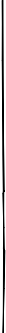

> スペイン語の過去時制には２種類あります。 一つは単純に何かが起こったという過去（点過去）。 もう一つは、過去のある時点で何かが起こっていたという過去（線過去）です。 現在時制と同様に、過去時制の動詞の変化にも不規則なものがありますが、現在時制ほどには多くありません。また、よく使う動詞に不規則な変化をするものが多いといえます。 過去時制を用いて、自分のしたことについて話してみましょう。 過去時制の動詞の変化 conjugación de verbos en el tiempo pasado
